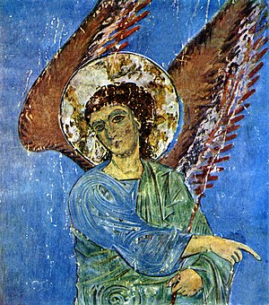
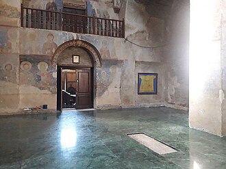

get to know georgia
ყინწვისი — ქართული ხუროთმოძღვრების ძეგლი, სამონასტრო ანსამბლი სოფ. ყინწვისიდან დაახლოებით 10 კმ-ზე, რომლის ნაგებობათაგან დღემდე თითქმის თავდაპირველი სახით შემორჩა XIII საუკუნის დასაწყისის წმ. ნიკოლოზის ჯვაროვან-გუმბათოვანი, გეგმით მართკუთხა ტაძარი.
საერთო იერით უახლოვდება ტიმოთესუბანს. ნაგებია აგურით, საკურთხევლის აფსიდი ბემიანია. აფსიდებითაა დასრულებული სამკვეთლოცა და სადიაკვნეც. შიგა სივრცეს ქმნის ჯვრის ოთხი მკლავი, რომელთაგან აღმოსავლეთი მკლავის გარდა ყველა სწორკუთხაა. დასავლეთი მკლავი უფრო გრძელია. გუმბათქვეშა კვადრატიდან წრეზე გადასვლა განხორციელებულია აფრებით, რომლებზედაც ამოყვანილია 12-სარკმლიანი გუმბათის ყელი. სარკმლები შემკულია აგურის წყობით გამოყვანილი თაღებით. ტაძარს სამი შესასველი აქვს - ჩრდილოეთის, სამხრეთის და დასავლეთის. შენობა შიგნით თავიდანვე შეულესავთ და მოუხატავთ, ფრესკების დიდი ნაწილი დაზიანებულია, მაგრამ რაც დარჩა, მხატვრული ღირსებით შუა საუკუნის ქართული მონუმენტური ფერწერის ერთ-ერთი საუკეთესო და მნიშვნელოვან ძეგლს წარმოადგენს. ჩრდილოეთ კედელზე გამოსახული არიან გიორგი III, თამარ მეფე და გიორგი ლაშა
საკურთხევლის კონქში ღვთისმშობლის მონუმენტური ფრესკაა. ჩრდილოეთ კედელზე მაცხოვრის აღდგომის კომპოზიციიდან აღსანიშნავია ანგელოზის გამოსახულება. მომხიბლავია ფრესკების კოლორიტის ჰარმონიულობა. ფონისთვის გამოყენებულია მოცისფრო-მოლურჯო ტონი, შარავანდებისათვის - ოქრო. ფიგურები პლასტიკურია, სამოსის ნაოჭები მსუბუქი, სახეები - მეტყველი. კომპლექსის ნაგებობათაგან შემორჩა აგრეთვე XIII საუკუნის ღვთისმშობლის ეკლესიის ნანგრევები (ფრესკებითა და კანკელით), განვითარებულია შუა საუკუნეების მცირე ეკლესია და გვიანდელი შუა საუკუნეების სხვა ნაგებობანი.

2019 წლის აგვისტოს დასაწყისში სოციალურ ქსელებში გავრცელდა ინფორმაცია, რომ ყინწვისის მონასტერში მარმარილოს ძვირადღირებული მეტლახი დაიგო.[2] საქართველოს კულტურული მემკვიდრეობის დაცვის ეროვნული სააგენტო ადგილობრივი სასულიერო პირების მიერ მეტლახის დაგებას „თვითნებობა“ და „უკანონობა“ უწოდა და სპეციალური განცხადება გაავრცელა.
სააგენტოს განცხადების თანახმად, სახელმწიფო ინსტიტუციებისა და სათანადო სარესტავრაციო მეთოდოლოგიის აბსოლუტური უგულველყოფით შესრულებული სამუშაოები სრულ წინააღმდეგობაშია მოქმედ კანონმდებლობასთან და ძეგლთა დაცვით პრინციპებთან, უხეშად ხელყოფს ზოგადეროვნულ ფასეულობას და მნიშვნელოვან აზიანებს კულტურულ მემკვიდრეობას.[3] მათივე განმარტებით, მიმდინარე სამუშაოები უკანონო ქმედებად შეფასდა საქართველოს საპატრიარქოს ხუროთმოძღვრების, ხელოვნებისა და რესტავრაციის ცენტრის საბჭოს და საქართველოს კულტურული მემკვიდრეობის დაცვის ეროვნული სააგენტოს ადრექრისტიანული და შუასაუკუნეების კულტურული მემკვიდრეობის უძრავ ძეგლთა საბჭოს მხრიდანაც.
სააგენტო ასევე აღნიშნავს, რომ იატაკის ახალი საფარი სრულ შეუსაბამობაშია ტაძრის ინტერიერის მხატვრულ არქიტექტურულ სახესთან და თავისი სარკისებრი ზედაპირით უხეშად აკნინებს კედლებზე შემორჩენილ XIII საუკუნის დასაწყისის კედლის უნიკალურ მხატვრობას.[3] სააგენტო ასევე აღნიშნავს, რომ უშედეგო აღმოჩნდა მათი მხრიდან უნებართვო სამუშაოების დროულად აღკვეთის არაერთი მცდელობა. უწყების ზედამხედველობის სამსახურის ჯგუფი ადგილობრივმა მღვდელმსახურებმა არ შეუშვეს სამონასტრო კომპლექსის ტერიტორიაზე, რამაც კანონით განსაზღვრული ქმედებების აღსრულება შეუძლებელი გახადა.[3] კულტურული მემკვიდრეობის დაცვის სააგენტოს საზოგადოებასთან ურთიერთობის სამსახურის ხელმძღვანელის, ბექა ბარამიძის განმარტებით, რომელიც მან გამოცემა ნეტგაზეთს მისცა, პოლიცია რომ გამოეძახათ და ამით მიეღწიათ იმისთვის, რომ დაეშვათ ტაძრის ტერიტორიაზე ზედამხედველობის სამსახური იქ მიმდინარე პროცესების ადგილზე შესამოწმებლად, ეს გარკვეულწილად წარმოშობდა უხერხულ მომენტებს საქართველოს საპატრიარქოსთან, რომელთანაც სახელმწიფო კონსტიტუციური შეთანხმებით თანამშრომლობს.
ადგილობრივი სასულიერო პირების ინიციატივით დაწყებული პროცესი არ შეჩერებულა არც საქართველოს საპატრიარქოს მაღალი იერარქიის პირების საჯარო განცხადებების შემდეგ, რომელის თანხვედრაში იმყოფებოდა სააგენტოს პოზიციასთან.[3] კულტურული მემკვიდრეობის დაცვის ეროვნული სააგენტოს შეფასების მიუხედავად, ყინწვისის მონასტრის წინამძღვრის, დეკანოზ ეფრემის, მტკიცებით ძველი ფილები კულტურულ მემკვიდრეობას არ წარმოადგენდა და „უბრალო ფილები იყო“. მისივე შეფასებით „ძვირფასი მარმარილოთი მოხდა ჩანაცვლება, უკეთესი გახდა“.[5]
2019 წლის 12 აგვისტოს საქართველოს საპატრიარქომ გაავრცელა განცხადება, რომელშიც აღნიშნავს, რომ იატაკი სრულ დისონანსშია ტაძართან და საჭიროა ამჟამად არსებული რეალობის სასწრაფოდ გამოსწორება. საპატრიარქომ ასევე ხაზი გაუსვა ასეთი სახის საქმიანობის კულტურული მემკვიდრეობის სააგენტოსთან შეთანხმების აუცილებლობას. განცხადებაში საპატრიარქო ასევე მოუწოდებს ეპარქიის მმართველ მღვდელმთავარ - იობს (აქიაშვილი) - „საეკლესიო კანონიკიდან გამომდინარე, ველოდებით ეპარქიის მმართველი მღვდელმთავრის რეაგირებას ყინწვისის ტაძრის წინამძღვრის თვითნებურ ქმედებაზე“.[6]
